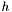
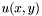
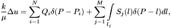
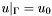
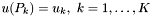
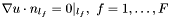
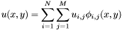
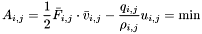

- Two main ways of pressure fields reconstruction
There are two widely-used ways of solving pressure reconstruction problem:
- Interpolation of the so-called "formation pressures", pressures measured in wells after two or three days of shut-down.
- Creation of the mathematical model describing fluid filtration using the language of partial differential equations.
Due to the simplicity of usage, the first way is much more widely used PU (performance unit): there is no necessity in model tuning and algorithms are simply to use. Obtained pressure field is often physically inadequate, nevertheless it is used to analyze energy state of oil formation, to detect boundaries of reduced and raised pressure zones and calculate weighted average pressures within areas. The second way is usually used in research institutes and model creation is well-expensive. Usually it takes about one year. The significant constraint involuntarily set up to mathematical models described by the terms of partial differential equations is connected with the correctness of a boundary problem. For example, to describe a well in mathematical model we set only fluid rate/injectivity or bottom hole pressure. The simultaneous setting of rates and pressures may lead to incorrect (overdetermined) boundary problem. However, the simultaneous setting of inconsistent data is frequent for solving of underground fluid filtration problems - there is a lot of inconsistent data with different levels of errors. Existent mathematical models require precise data with no errors (rates, pressures, permeability), but it is impossible in the real life. That's why the ability of mathematical model to take into account inconsistent data and data with errors is of high-interest for authors.
This example shows the method, which has the features of the both considered ways and has the ability to take into account often inconsistent values of rates and bottom hole pressures in wells.
- Classical statement of the problem in the differential form.
We are considering the task of calculating an isobar map for a homogeneous productive oil formation with a relatively small thickness . In this case the function  of the formation pressure can be considered two-dimensional. is obtained by solving the boundary problem:

where $k$ is permeability, $$ - liquid viscosity. The vertical wells are described as point sources with flowrates of $Q_i$. The position of horizontal (slanting) wells and formation fractures is described by a curve with the curved source density of $S_j$. The boundary conditions are:
-  - value of pressure on the boundary (oil bearing outer contour);
-  - downhole pressures;
-  - condition of non-filtration on the curves (boundaries of non-productive formations, tectonic zones).
For a differential equation of elliptical type the simultaneous setting of rates and pressures for the same points and/or curves of the area is incorrect but it is frequent when the formation energy state is studied. In order to use the overdetermined conditions and avoid the incorrectness the boundary problem is re-formulated as a variational problem.
- Variational statement of the problem.
The pressure field is determined as cells of equidistant grid with values:

For each cell we can write one of the two functionals:
- Cell rate: we use well-known variational principle describing filtration in porous medium: among all possible isothermal laminar flows of homogeneous incompressible liquid in cell with heterogeneous borders with filtration speed set, the real filtration flow is that the pressure forces work spent for filtration resistance is minimal.
For work of pressure forces in the cell we can write:

Differentiation of this expression by  leads to law of conservation of mass written for the cell (i,j). To represent impermeable lines it is necessary to set zero filtration speed via suitable cell borders. It is effective to use Brezengham algorithm for that.
leads to law of conservation of mass written for the cell (i,j). To represent impermeable lines it is necessary to set zero filtration speed via suitable cell borders. It is effective to use Brezengham algorithm for that.
CMOFS algorithm considers 3 situations:
In case if we use only 1 and 2 types of functionals to obtain the solution, the solution will be the same as for corresponding boundary problem because we use only consistent data. In case of redundant and inconsistent data we use the third functional.
freeflow-1.0.0pre